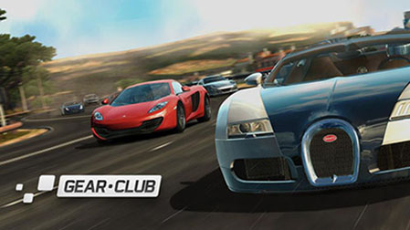

Hi! I am Francis Roux.
I've worked for 15 years in video game studios as a physics programmer.
In 2009, I started working at Eden Games, on the physics engine of Test Drive Unlimited 2, available on Xbox360, PS3 and PC.
As of 2014, the studio decided to develop racing games for mobile phones. At that point, I started working with Unity. Taking advantage of my experience, I developed a simplified physics engine in C# to meet the performance of mobile phones. Gear.Club Mobile, F1 Mobile, or even Gear.Club Unlimited on Nintendo Switch now use this engine.
I then carried on a one-year mission at Ubisoft, to participate in the development of The Crew 2, but I never lost my interest in Unity. However, I was aware of the limitations of the integration of PhysX into Unity. In a racing game, it is essential to control the different collisions that apply to a vehicle’s chassis, to be able to modify or even delete the contact points before the solver takes them into account. Being suddenly stopped by a sidewalk a few inches high when establishing our fastest lap is frustrating! Although this functionality already exists in PhysX, it is unfortunately not available in Unity. This observation marked the start of the Ev4sio.Physics project, which aims to provide access to all the features of PhysX in Unity.
Today, the project is sufficiently advanced to be distributed, so that it can still evolve thanks to the Unity community.
I really hope you'll enjoy it!